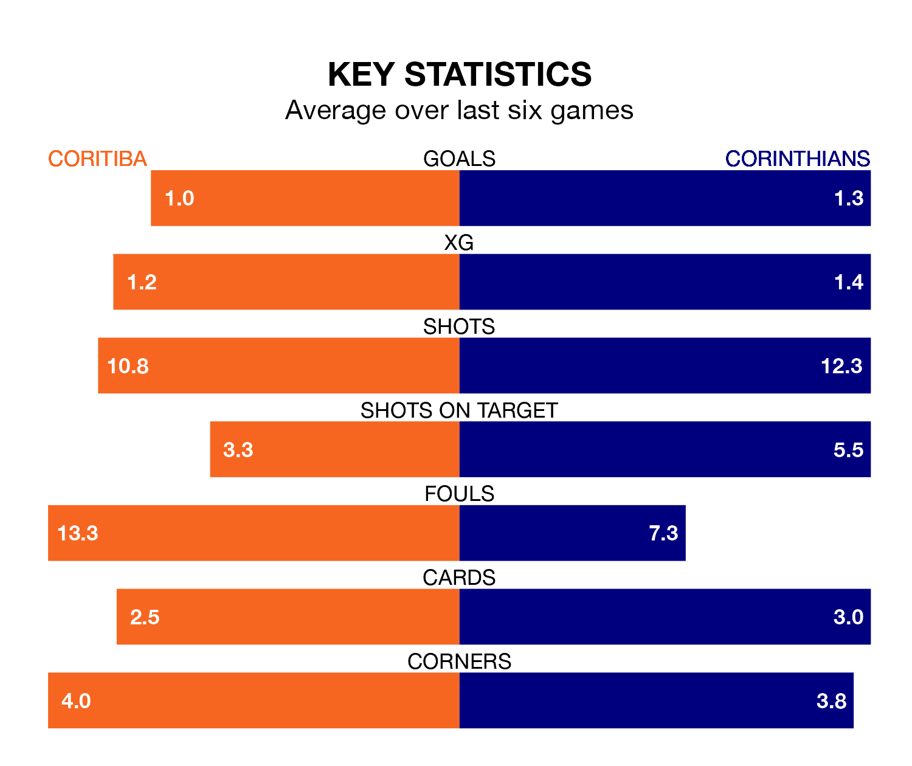

Coritiba host Corinthians on Thursday at the Estádio Major Antônio Couto Pereira in Serie A.
In their last league match, on Sunday, Coritiba lost to Bragantino 1-0 away.
Corinthians also lost, 2-1 at home against Internacional on Saturday, with Ángel Romero scoring their goals.
Coritiba are 19th in the table after 37 games, of which they have won eight and drawn six, earning 30 points.
Corinthians are six places ahead of the hosts in 13th, with 11 wins and 14 draws putting them on 47 points.
In the last 10 years, Coritiba and Corinthians have played each other on 13 occasions. Corinthians won seven of them and they drew six times.
On average, Coritiba scored 0.9 goals and Corinthians 1.8 in those matches.
Their last meeting was on August 13, when Corinthians won 3-1 at home.
With 41 goals in 37 games so far this season, Coritiba are scoring at below the league average rate with 1.1 goals per game. And they are conceding more than average, letting in 71 goals at a rate of 1.9 per game.
The away side, meanwhile, are average scorers, with 1.2 goals per game. They have conceded 1.3 goals per game.
In Robson dos Santos Fernandes, Coritiba have one of the league's most on-form strikers so far this season. He has notched 12 goals in 32 appearances, to sit sixth in the scoring charts.
His goal rate of one every 197 minutes is quicker than that of Yuri Alberto Monteiro da Silva, Corinthians' top scorer with a goal every 335 minutes, and a total of eight goals in 33 games.
The home team are in mixed form in Serie A, with two wins and a draw from their last six games.
And also with two wins and a draw over that period, Corinthians' form is identical – they have both taken seven points from 18.
